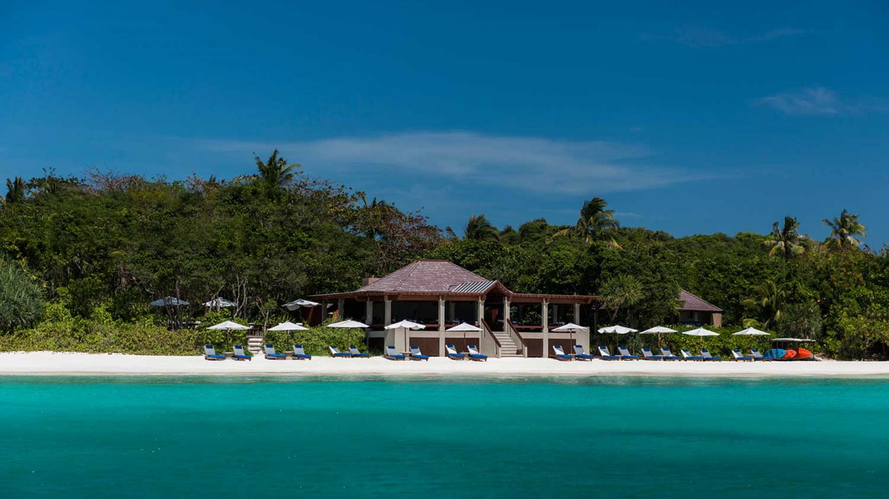
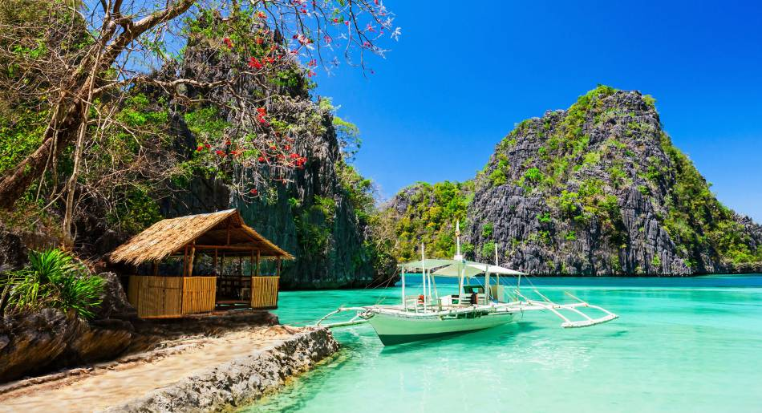
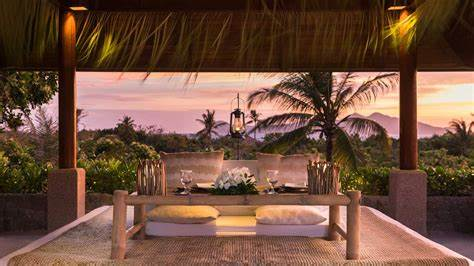
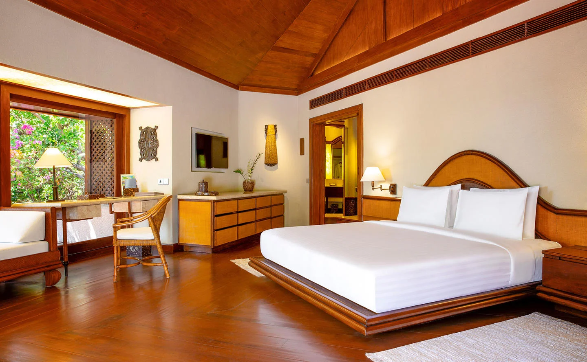
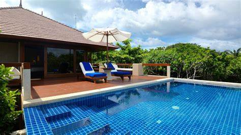
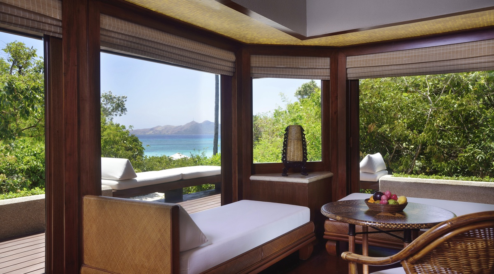
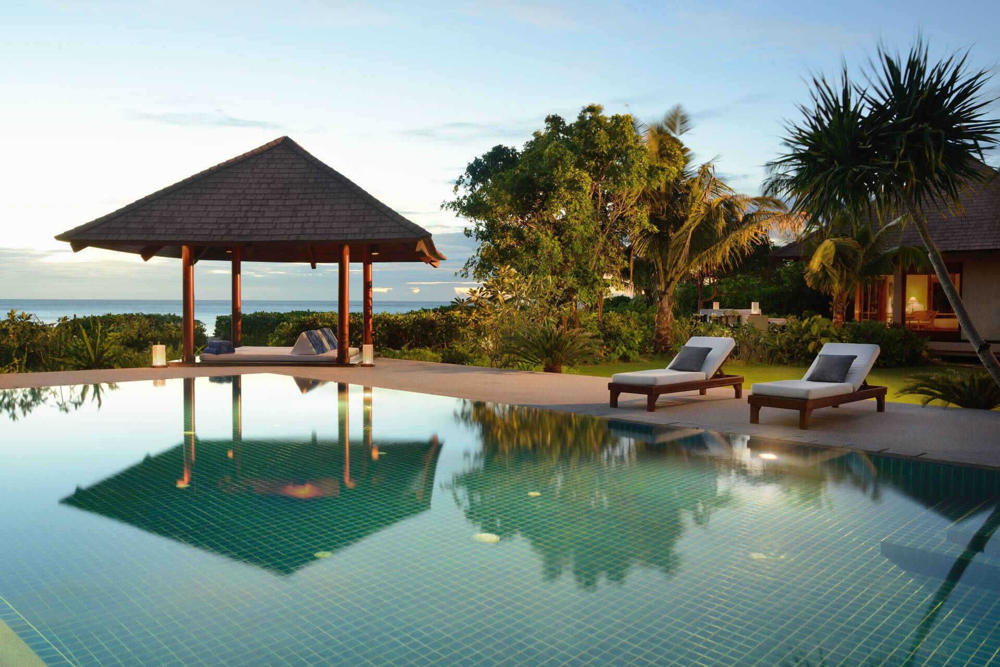
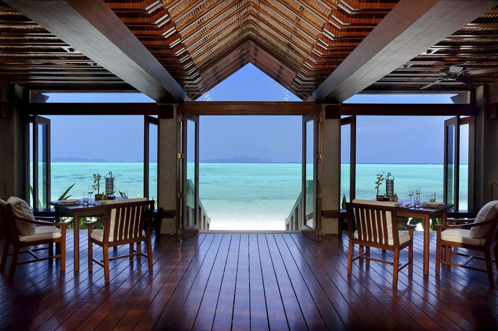

Discover Our Luxurious Villas
Uncover the Perfect Retreat at Amanpulo
Beachfront Casitas
Our Beachfront Casitas offer absolute privacy with stunning views of the turquoise waters. Each casita is designed with natural materials and features a private pool, a spacious living area, and a luxurious bedroom. Wake up to the sound of the ocean waves and enjoy a seamless connection to the beach right at your doorstep.
The design merges traditional Palawan architecture with modern comforts, creating a peaceful and intimate environment. Whether you're relaxing on your private terrace or swimming in the clear waters, this is the perfect spot to unwind and recharge.
Hillside Villas
Our Hillside Villas are perched above the island, offering panoramic views of Pamalican Island and the surrounding sea. With floor-to-ceiling windows and open-air spaces, these villas provide an unparalleled view of the island’s stunning landscapes. Enjoy a peaceful retreat with luxurious amenities and complete seclusion.
These villas feature large living areas, private pools, and spacious bathrooms designed for ultimate relaxation. The natural surroundings and elevated position ensure that you have the utmost privacy, making it ideal for couples or those seeking solitude.
Treetop Villas
For those seeking a more adventurous yet luxurious escape, our Treetop Villas offer an immersive experience among the lush canopy of the island's tropical trees. These villas offer stunning views of the island’s verdant forest and the sparkling waters of the surrounding sea.
The design of the Treetop Villas blends harmoniously with nature, with eco-friendly features and an emphasis on tranquility. The open-air spaces and private balconies provide a peaceful sanctuary above the ground, where you can enjoy the sounds of nature and the beauty of the island from the comfort of your villa.
Private Residences
Our Private Residences are multi-bedroom accommodations designed for families or groups seeking the ultimate in privacy and luxury. These expansive villas offer separate living and dining areas, private pools, and access to the island's exclusive amenities.
Each residence is fully staffed with a dedicated butler, and the spacious design ensures that your family or group can enjoy the utmost comfort while experiencing the island’s serenity. The secluded locations offer beautiful views of the beach, gardens, or tropical forest, ensuring that each stay is a truly unique experience.
Plan Your Stay
At Amanpulo, every villa is designed to provide the highest level of comfort and privacy. Whether you prefer a beachfront retreat, a forest hideaway, or a grand residence, each accommodation promises an unforgettable stay on the beautiful Pamalican Island. Book your escape to paradise today and enjoy a personalized experience like no other.